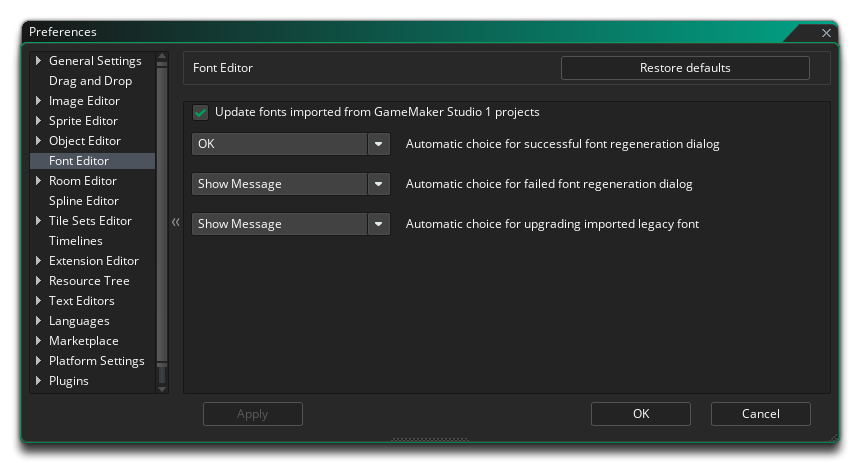
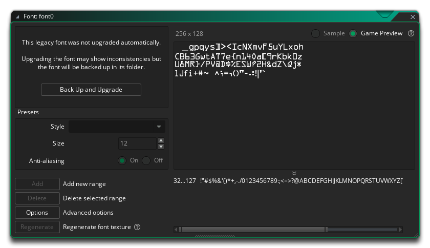

The Font Editor Preferences are used to define how the Font editor behaves. The different options available are listed below along with a description of what each one does.
Note that it will also happen if the GameMaker Studio 1 font does not have a cached font texture. If a legacy font cannot be updated, then GameMaker Studio 2 will default to using the cached font texture, and the Font Editor will no longer permit you to edit the font, showing an option to backup and update to another: 
Clicking this will enable you to edit the font, either adding
the missing font or setting another one, and the backed up font is
stored in the font resource's folder, as <font
name>.yy.gms1 and <font name>.png.gms1. To
restore these files, manually delete the <font
name>.yy files and replace them with these by removing the
.gms1 extension from the filenames. Important! All
resources store their names in the .yy file, so you must
edit these and put the right name of the resource in the
<name> field as well (if different).